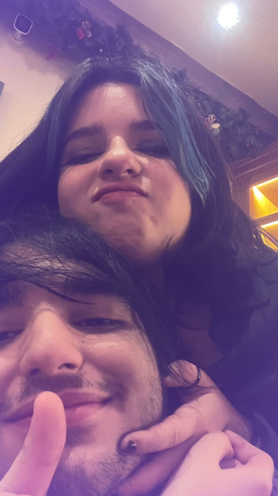
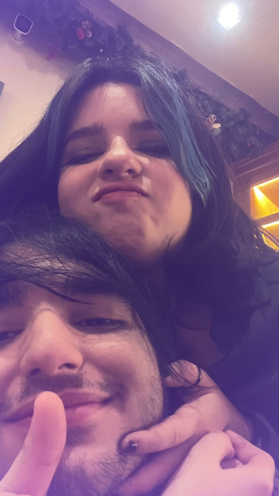
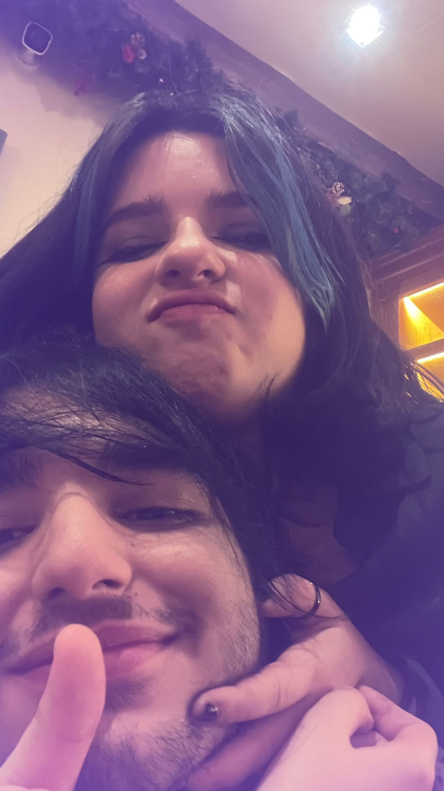

ho scritto un paio di cosine pensando a te

ciao amore,
piccolo messaggio per dirti che ti amo, mi manchi tanto e ti aspetterò ❤️
ciao amore,
ho letto una frase di d'annunzio che mi ha fatto pensare a te, diceva: "Saremo felici o saremo tristi, che importa? Saremo l'uno accanto all'altra. E questo deve essere, questo è l'essenziale", ti amo tanto
ciao amore mio,
ti scrivo questa lettera (presumo non troppo lunga essendo che sarà tutto di getto), volevo dirti che voglio esserci per te, voglio essere il tuo amante, il tuo migliore amico, il tuo posto sicuro, la persona che ti fa sentire bene e che ti fa sentire amatx, meriti tutto ciò ed oltre, penso a te ogni giorno, ti sogno ogni notte e penso a quando potrò di nuovo abbracciarti e a quando vorrai di nuovo un mio bacio, perché non posso accontentarmi della tua amicizia, non ci riesco, perché ti amo in un modo che non proverò mai per nessunx altrx, se provassi a cercare un altra persona sarebbe solo un tuo sostituto, perché il mio cuore ormai l'ho donato a te, e non può essere restituito, spero tu ne faccia buon uso e voglia riprovarci con me, perché amare è si fatto dai sentimenti, ma anche lo scegliersi ogni giorno e farei di tutto per essere la persona giusta per te, sono una persona testarda, come ho già detto voglio che tu sia la mia prima ed ultima volta in tutto, e farò il possibile per essere anche la tua di molte cose, ti amo tanto e ti aspetterò, se necessario anche per sempre, non mi sto privando di niente aspettandoti, ma mi priverei della mia felicità se provassi a cercare qualcun'altrx mentre il mio cuore appartiene a te❤️
ciao amore,
mi dicono tutti di andare avanti e frequentare altre persone, ma non è che non possa farlo, è solo che non voglio farlo, voglio svegliarmi ogni mattina, vederti dormire e darti un bacio sulla fronte come buongiorno, voglio tornare a casa dopo 8/9 ore di lavoro, dopo aver mangiato da solo, dopo tutto lo stress, solo per poi poter tornare a casa, stanco morto e anche solo vederti per sentirmi bene, perché anche solo la tua presenza mi rende felice, poter sentire il tuo odore di fumo e profumo, ascoltare ciò che ti passa per la testa, sentire il calore del tuo corpo sul mio, poter assaporare ancora le tue labbra e stare con te
ciao amore mio,
ogni volta che ti vedo capisco il perché mi sono innamorato di te, sei diversx, diversx da tutte le persone io abbia mai incontrato, lo sei esteticamente, perché non ti conformi agli altri, caratterialmente perché sei unicx, e sentimentalmente perché mi hai fatto sentire per 4 mesi la persona più importante e speciale del mondo, sono del pensiero che quando si trova la propria felicità non bisogna mai arrendersi per ottenerla, e per me sei tu la mia felicità
ciao amore,
vorrei ti vedessi come ti vedo io, dici che sei un fallimento e sei inutile, io non penso assolutamente questo, penso tu sia una persona magnifica e forte, hai superato tante cose e sei ancora qui, hai superato tutto, poi sinceramente mi ha fatto un po’ male quando mi hai detto che nessunx ti vuole quando sai benissimo che io ti vorrei più di ogni altra cosa al mondo e che se volessi riprovarci non esiterei un secondo, perché per me sei speciale e ti amo, non ho avuto relazioni serie con altre persone, ma delle esperienze si, e tu sei la persona migliore che abbia mai incontrato, non voglio assolutamente arrendermi, so per certo che se lo facessi andrei a cercare qualcun’altrx che possa compensare la tua mancanza e cercherei te in loro e non mi sembrerebbe corretto nei loro confronti, questo è solo un flusso di coscienza, non ci sono domande ne risposte da dare, volevo solo fartelo sapere, ti amo ❤️
ciao amore,
oggi ti scrivo per dirti che ti amo ancora, è doloroso da sentirselo dire perché so che non puoi ricambiare, ogni tanto penso, penso al fatto che non ami me ma lui, mi viene una fitta al petto quando ci penso, forse è solo un illusione ma sogno ancora di poter stare con te, di poter abbracciarti, di poter farti sentire di nuovo bene e al sicuro, di poter baciarti con tutto l'amore che provo per te, di poter andare ai concerti insieme, poter andare al parco insieme, ascoltare la musica insieme, sentire il tuo calore su di me e farti sentire il mio, darti tutto l'amore che gli altri non hanno voluto o potuto darti, farti sentire amatx e speciale, poter sognare di nuovo un futuro insieme, non voglio nessun'altrx, voglio solo te, e sarà così per sempre, perché sei tutto ciò che voglio in un partner e sei tutto ciò che amo. probabilmente sono solo geloso del fatto che ami lui, ma penso davvero che non ti meriti, ti ha avutx e ti ha lasciatx, e per me non ci sono scuse per questo, non riesco a comprendere come si possa lasciare una persona come te, forse perché io non lo farei mai, ti stai struggendo per lui che anche se ti ci sei praticamente dichiaratx (mi ha ucciso il fatto che tu lo abbia fatto una settimana dopo avermi lasciato lol) e lui dice che ha paura, come si può aver paura dell'amore? anche io sono stato ferito tanto da te, anche se non direttamente, ma se mi rivolessi con te correrei senza alcun dubbio. sento così tanto la tua mancanza che ho ricominciato a fumare perché mi ricorda te e il tuo odore, probabilmente sono egoista ma non mi piace l'idea che lui ti rivoglia, perché come ho già detto secondo me non ti "merita", probabilmente questa è solo una lettera egoista, ma l'ho scritta con tutto ciò che provo stasera, ti amo e ti amerò per sempre.
cose che mi fanno pensare a te:
la luna, le rose bianche, il sole, la notte, le lettere, nayt, i radiohead, i neighbourhood, i deftones,i tarocchi, la magia, il nero, il rosso, il blu elettrico, paganini, kilmt, gli smiths, conan gray, debussy, tlou, resident evil, silent hill, gli horror, magritte, chopin, la sonata al chiaro di luna, l'amore, la felicità, il sentirsi sicuri, il rinascimento, pasolini, le divinità greche, la pioggia, il freddo, il pantheon, i cure, le foglie che cadono dagli alberi, gli amanti, gli abbracci, il fatto che penso a te appena mi sveglio, i musei, l'arte, la passione, roma, il paradiso, la tristezza, la felicità, il dolore, il piacere, la cucina, i gatti. ci sono sicuramente tante altre cose, ma queste sono le cose principali, ti amo.
ciao amore,
vorrei farti capire quanto ti amo, voglio visitare tutti i posti in cui siamo stati insieme, poterli rivivere, non so se riuscirò mai a vederti solo come un amicx, non so se ci riuscirò perché per me è impensabile ridurre tutto ciò che provo per te ad una amicizia, per me è impensabile poter pensare ad una persona che fino a non molto tempo fa sognavi potesse diventare tua moglie, una persona che fino a poco fa potevi abbracciare, baciare e toccare, io ti amo tanto e incondizionatamente, lo dico perché anche se non mi ami, io ti amo ancora e sarà così per sempre, perché una persona come te per me non ci sarà mai ne voglio che ci sia, non è solo sentimento, è scelta, scelta di volere che ci sia solo tu, per sempre. io non smetterò mai di sperare che tu possa amarmi, anche se non come prima, perché si matura e si migliora, non voglio un amore come prima, voglio un amore dove anche se si ha voglia di vedersi, non ci si strugge se la cosa non è possibile per un paio d’ore o un paio di giorni, voglio un amore maturo con te, voglio darti tutto l’amore che ti è stato negato, non scapperò ne al primo ne all’ultimo ostacolo, perché questo significa amare, il resto sono scuse. hai rubato il mio cuore, l’hai stregato e l’hai fatto tuo, la cosa non può cambiare. ti amo tanto
ciao amore,
penso a te ogni giorno, ogni cosa mi fa pensare a te, mi manchi davvero tanto, mi manca sentire la tua voce, mi manca guardarti nei tuoi bellissimi occhi, mi manca abbracciarti con tutte le forze, mi manca sentire il sapore delle tue labbra, mi manchi tu. spero io sia una persona di cui ti fidi e che tu ritenga che possa dirmi qualsiasi cosa, io ci sono e ci sarò sempre per te, ti amo davvero tanto e non voglio nessun’altrx al tuo posto, il tuo posto non può essere preso da nessunx mai, sei la cosa più bella che mi sia mai capitata e vorrei passare tutto il tempo del mondo con te, a sentirti parlare, a sentirti cantare, a guardarti, a non fare niente. ti amo tanto.
ciao amore,
ultimamente sto provando a non pensare a te, non perché non voglia farlo, ma per non stare troppo male, ci provo ma non ci riesco, posso distrarmi quanto voglio, ma appena ho un momento in cui non faccio nulla, penso a te, provo a guardare altre persone ma mi viene il disgusto, è cringe da dire ma mi scrivono un po' di persone, ma per me non contano niente perché nessuna di queste sei tu, riesco a pensare solo a te,voglio solo te, ti amo troppo per non pensare a te, appena mi sveglio sei il mio primo pensiero ed anche l'ultimo prima di addormentarmi(con annesse lacrime lol), mi manca il fiato ogni volta che penso a te, ma non per colpa tua, ma perché penso a quanto vorrei stare di nuovo con te e questo mi fa sentire male e mi fa venire anche qualche attacco di panico lol, ogni cosa che faccio mi fa pensare a te e sarà sempre così, il mio amore è puro e instancabile, è infinito e può aspettare per sempre per te, come ho già detto molte volte, preferisco aspettare te per sempre e non essere mai ricambiato piuttosto che cercare un altra persone che non amerò mai come te, mi sentirei in colpa a non poter dare tutto me stesso a qualcun'altrx poiché non potrebbe mai succedere. ti amo e ti aspetterò, sei la mia vita.
ciao amore,
Ogni volta che ti vedo penso a quanto sia grande l’amore che provo per te, mi fai sentire come se fossi in grado di fare qualsiasi cosa. Grazie a te ho scoperto quanto sia bello l’amore ma anche quanto possa farti soffrire con dubbi ed insicurezze, anche se siamo insieme da “solo” 5 mesi mi sembra come se fossimo sposati da decenni, ma non come i vecchi che dopo un po’ di anni di matrimonio si annoiano del partner e vanno avanti insieme per inerzia, ma come due persone che si amano come si amavano il primo giorno, per me non è cambiato niente da quel giorno, anzi, il mio amore non ha fatto altro che crescere a dismisura. Sei la cosa più bella che sia mai capitata, il mio obiettivo è renderti felice giorno per giorno per tutta la mia vita perché te lo meriti, sei una persona meravigliosa e ti amo, voglio che tu sia l’ultima persona che vedo prima di addormentarmi e la prima appena sveglio, voglio una vita con te, voglio una casa, una famiglia, quanti più gatti possibile e una persona da cui poter tornare la sera e raccontarci a vicenda le nostre giornate; non vedo l’ora di vedere come saranno delle creature generate da noi, unx figlix con il tuo carattere o con il tuo aspetto sarebbe la cosa che mi farebbe sentire realizzato più di qualsiasi traguardo o qualsiasi somma di denaro, sei tu la cosa che mi fa sentire come se avessi tutto ciò di cui ho bisogno, potrei non avere niente nella vita, ma se avessi te sarei felice comunque, non vedo l’ora di fare qualsiasi cosa con te, voglio che tu sia la mia prima ed ultima volta per tutto ciò che non ho ancora fatto nella mia vita, penso al futuro che ci aspetta ed anche se non sarà facile, noi ci sosterremmo a vicenda, perché ci amiamo, non vedo l’ora di vivere il resto della mia vita con te.
ciao amore,
ho letto una frase molto carina di kundera che dice: "l’amore è per definizione un dono non meritato; anzi, l’essere amati senza merito è la prova del vero amore... ...quanto è più bello sentirsi dire: sono pazzx di te sebbene tu non sia né intelligente né onesto.", è per me una frase bellissima e che un po' ritrovo in ciò che provo per te, non è che ti ami principalmente per una tua caratteristica, io amo il tuo complesso, compresi i tuoi comportamenti e la tua personalità, per me per amare una persona non devi amarne un qualcosa, devi solo amarla, ed è questo ciò che provo per te, non cambierà mai ciò che provo per te, sei la mia luce, anche solo il sapere che tu stia bene mi fa sentire bene, ti amo più di ogni altra cosa al mondo, mi sono anche tatuato per te, non l'ho fatto per avere qualcosa in cambio, ma per avere per sempre almeno una parte di te con me. ti amo tanto e spero tu possa passare un san valentino decente e che questa lettera possa darti un minimo di """gioia""", anche se avresti preferito riceverla da un'altra persona. ripeto, ti amo tanto ❤️